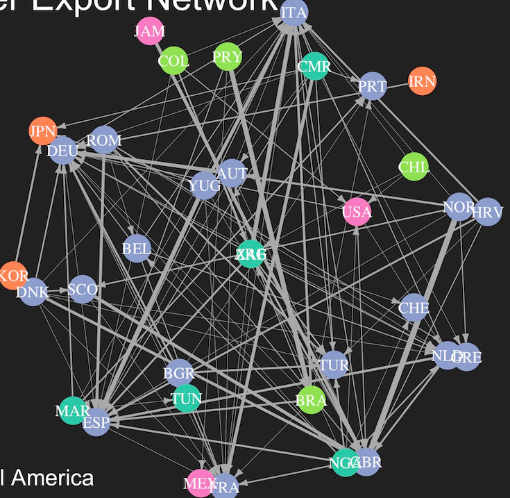
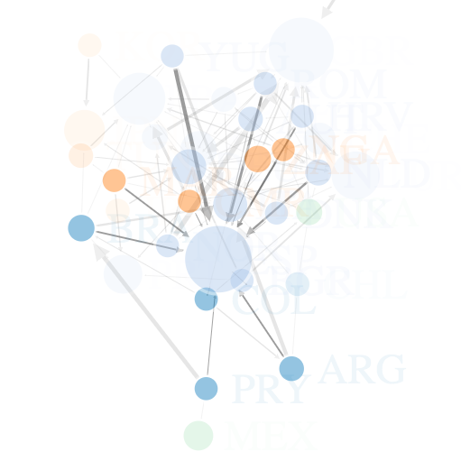

|

1998 World Cup
Soccer Player Network
(non-interactive)
|
Vis tool: R(igraph, network)
Description:
The network example describes the 22 soccer teams which participated in the World Championship in Paris, 1998. Players of the national team often have contracts in other countries. This constitutes a players’ market where national teams export players to other countries. Members of the 22 teams had contracts in altogether 35 countries.
This network is highly asymmetric. Countries with large football league such as England, Germany, Italy, and Spain are usually importers that they have a lot of foreign players in the league. On the other hand, countries with small football league often are exporters, that a lot of players have foreign contracts.
|
|

1998 World Cup
Soccer Player Network
(Interactive)
|
Vis tool: R(networkD3)
Description:
Comparing to non-interactive, D3 network gives viewer ability to drag any country and to see its importation and exportation amount. In addition, size of the node represents import to export ratio of the country.
|
Code and Data for Non-interactive Plot
Code and Data for Interactive Plot
{kind=link}